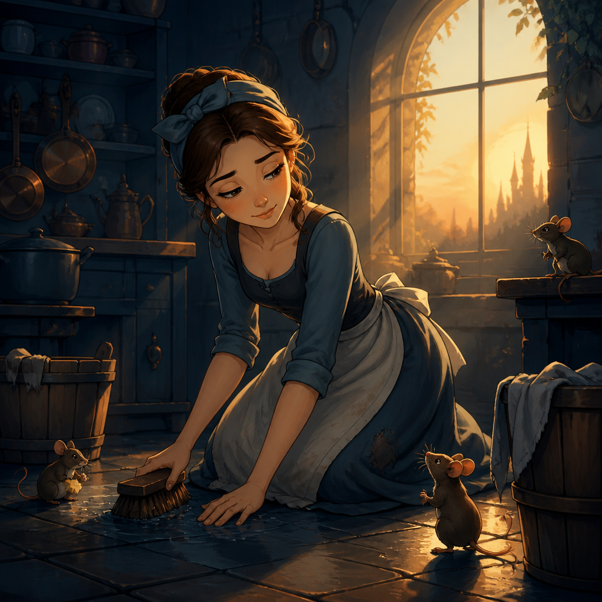
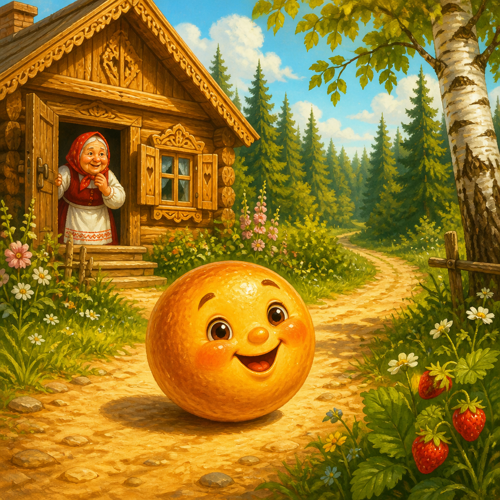
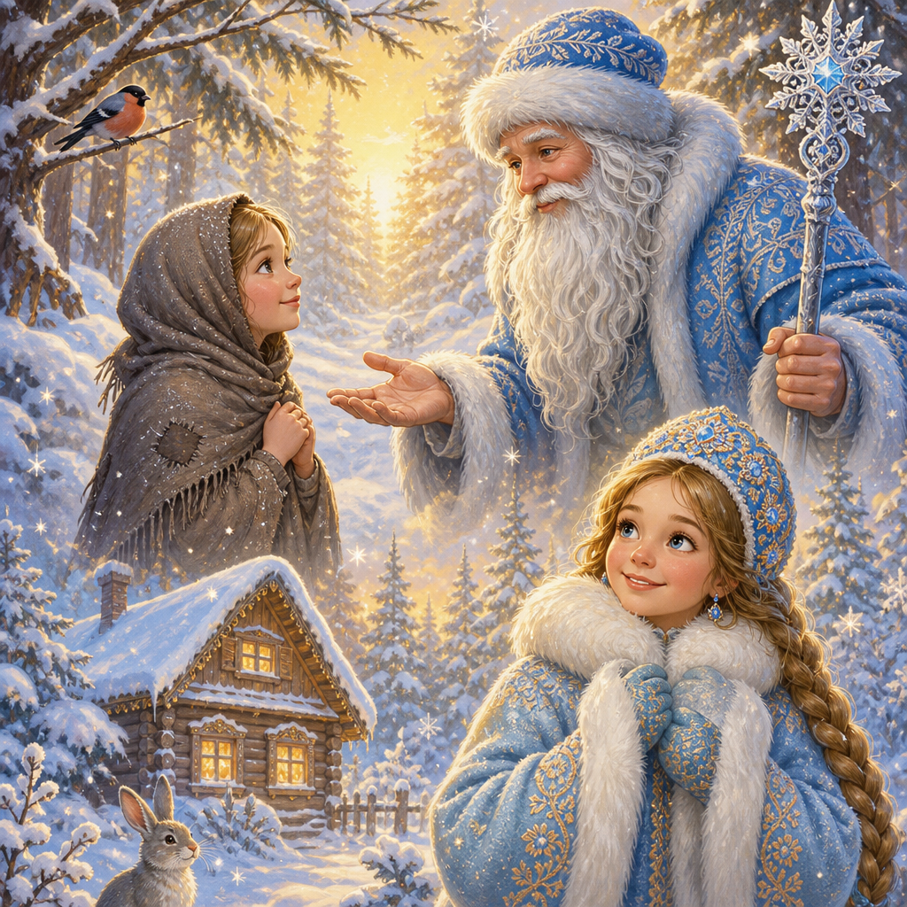

Story quest
Fairytale stories wrapped around Cool Words — pick or type the missing word, scene by scene.

Unit 1 · Lifestyle
Cinderella · Lifestyle Quest
37 scenes · all Cool Words A–D from This is your life. Happy end included.

Unit 1 · Get + Run
Kolobok · Get & Run Quest
15 scenes · gaps from Get and Run only. Lifestyle phrases recycle in the story text.

Unit 1 · Clothes
Morozko · Clothes Quest
27 scenes · Clothes SB 1.1 · classic Morozko ending — kindness rewarded, rudeness punished.